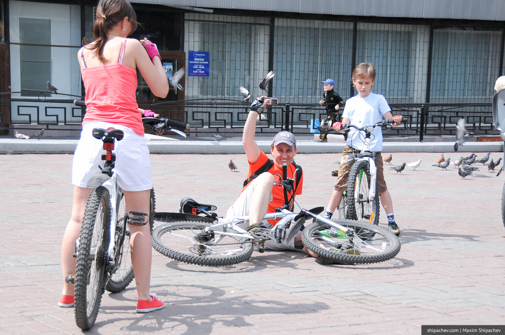

С возрастом человеку становится все сложнее и болезненнее падать. Причем как в переносном так и прямом смысле. Шмякнуться на землю или свалиться с велосипеда или скейта для активного ребенка плёвое дело. Встал- пошел — no brain no pain. Поссорился с лучшим другом? На неделю, не больше.

Идут годы — человек растет. И я прямом и в переносном смысле. Подскользнувшийся средний взрослый грозит обязательно нанести какой-нибудь больничный своему здоровью. Да и после жизненных неудач вставать на ноги все сложнее.